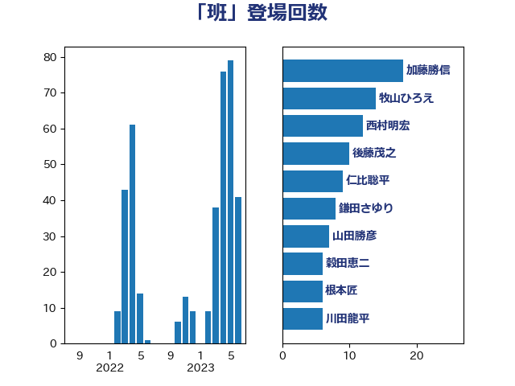

単語「班」

| 加藤勝信 | 自由民主党 | 18 回 |
| 牧山ひろえ | 立憲民主党 | 14 回 |
| 西村明宏 | 自由民主党 | 12 回 |
| 後藤茂之 | 自由民主党 | 10 回 |
| 仁比聡平 | 日本共産党 | 9 回 |
| 鎌田さゆり | 立憲民主党 | 8 回 |
| 山田勝彦 | 立憲民主党 | 7 回 |
| 穀田恵二 | 日本共産党 | 6 回 |
| 根本匠 | 自由民主党 | 6 回 |
| 川田龍平 | 立憲民主党 | 6 回 |
| 小林鷹之 | 自由民主党 | 6 回 |
| 福島みずほ | 社会民主党 | 5 回 |
| 本村伸子 | 日本共産党 | 5 回 |
| 塩川鉄也 | 日本共産党 | 5 回 |
| 仁木博文 | 無所属 | 5 回 |
| 齋藤健 | 自由民主党 | 4 回 |
| 川合孝典 | 国民民主党 | 4 回 |
| 上田英俊 | 自由民主党 | 4 回 |
| 上田清司 | 国民民主党 | 4 回 |
| 辻元清美 | 立憲民主党 | 3 回 |
| 西村智奈美 | 立憲民主党 | 3 回 |
| 柴田巧 | 日本維新の会 | 3 回 |
| 杉尾秀哉 | 立憲民主党 | 3 回 |
| 宮本徹 | 日本共産党 | 3 回 |
| 佐藤英道 | 公明党 | 3 回 |
| 鬼木誠 | 立憲民主党 | 2 回 |
| 阿部弘樹 | 日本維新の会 | 2 回 |
| 長友慎治 | 国民民主党 | 2 回 |
| 鈴木義弘 | 国民民主党 | 2 回 |
| 鈴木敦 | 国民民主党 | 2 回 |
| 野間健 | 立憲民主党 | 2 回 |
| 足立康史 | 日本維新の会 | 2 回 |
| 谷合正明 | 公明党 | 2 回 |
| 自見はなこ | 自由民主党 | 2 回 |
| 石川大我 | 立憲民主党 | 2 回 |
| 田村智子 | 日本共産党 | 2 回 |
| 池畑浩太朗 | 日本維新の会 | 2 回 |
| 横沢高徳 | 立憲民主党 | 2 回 |
| 川崎ひでと | 自由民主党 | 2 回 |
| 岸田文雄 | 自由民主党 | 2 回 |
| 山添拓 | 日本共産党 | 2 回 |
| 山井和則 | 立憲民主党 | 2 回 |
| 城井崇 | 立憲民主党 | 2 回 |
| 吉田久美子 | 公明党 | 2 回 |
| 伊佐進一 | 公明党 | 2 回 |
| 井野俊郎 | 自由民主党 | 2 回 |
| 青山繁晴 | 自由民主党 | 1 回 |
| 鈴木英敬 | 自由民主党 | 1 回 |
| 金城泰邦 | 公明党 | 1 回 |
| 若松謙維 | 公明党 | 1 回 |
| 神津たけし | 立憲民主党 | 1 回 |
| 磯崎仁彦 | 自由民主党 | 1 回 |
| 畦元将吾 | 自由民主党 | 1 回 |
| 田村まみ | 国民民主党 | 1 回 |
| 田中健 | 国民民主党 | 1 回 |
| 梅谷守 | 立憲民主党 | 1 回 |
| 柳本顕 | 自由民主党 | 1 回 |
| 松本尚 | 自由民主党 | 1 回 |
| 杉本和巳 | 日本維新の会 | 1 回 |
| 打越さく良 | 立憲民主党 | 1 回 |
| 山本博司 | 公明党 | 1 回 |
| 山下芳生 | 日本共産党 | 1 回 |
| 寺田稔 | 自由民主党 | 1 回 |
| 宮崎勝 | 公明党 | 1 回 |
| 天畠大輔 | れいわ新選組 | 1 回 |
| 大島敦 | 立憲民主党 | 1 回 |
| 坂本哲志 | 自由民主党 | 1 回 |
| 國場幸之助 | 自由民主党 | 1 回 |
| 吉田統彦 | 立憲民主党 | 1 回 |
| 佐藤正久 | 自由民主党 | 1 回 |
| 伊藤孝恵 | 国民民主党 | 1 回 |
| 井上哲士 | 日本共産党 | 1 回 |
| 上月良祐 | 自由民主党 | 1 回 |
| 三浦信祐 | 公明党 | 1 回 |